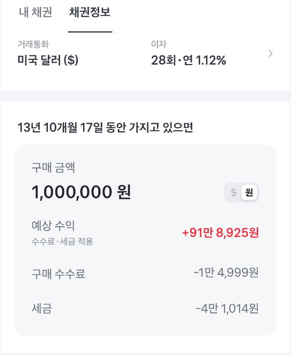
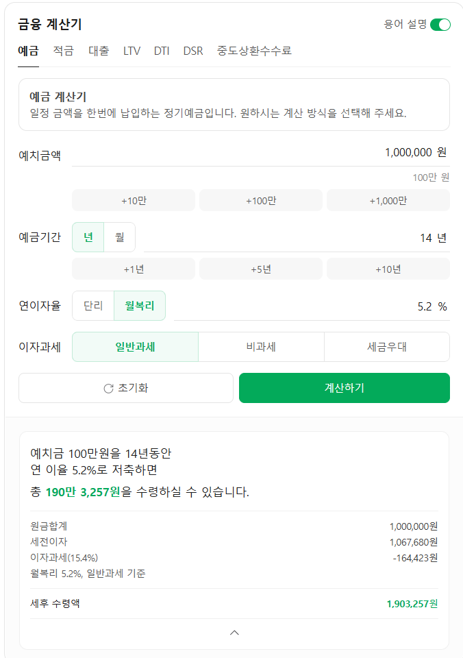

어차피 안읽을 사람들 많은거 뻔히 아니까 선 3줄요약 갈기고 시작
1. 미국채를 사서 만기까지 들고가면 원금+알파는 무조건 보장
2. 저금리시절 1.25%정도의 쿠폰금리로 발행된 국채를 사면 세금도 거의 없음
3. 달러 환율도 1353원으로 크게 부담되지 않는 수준으로 내려옴
글이 길어지면 읽기 싫으니까 간단하게 얘기하겠음
미국의 10년물 국채라고 하면 미국에 1000달러를 이자를 받으면서 10년간 빌려준 다음 만기에 다시 1000달러를 받는 채권임.
만기에 원금을 받을 수 있는데 왜 가격이 오르락 내리락 하냐?
보통 예금 개념으로 설명해야 이해가 쉬우니까 정기예금을 기준으로 설명하자면
채권은 중도해지가 안되는 정기예금임.
내가 오늘 1% 이자를 받기로 하고 10년간 100만원의 정기예금을 확정했음.
그럼 내 정기예금에서 나오는 이자는 매년 만원인데(복리와 세금등은 계산에서 제외)
근데 내일 트럼프가 핵을 쏘면서 금리가 갑자기 5%로 올랐음.
내일 철수가 정기예금을 들면 나오는 이자는 매년 5만원임
10년뒤 만기 수익률을 보면 나는 110만원을 손에 쥘 수 있고 철수는 150만원을 쥘 수 있음
내가 만기까지 들고가면 손해는 보지 않지만, 저금리 시절에 가입해서 10년간 40만원의 손해를 보는것임
그래서 내가 가입한 정기예금을 다른 사람한테 팔려고 하면 다른 사람은 100만원을 주고 사는게 아니라
고금리를 고려한 수익률만큼 깎아서 살것임
내가 지금 100만원을 넣으면 10년뒤에 150만원인데, 너의 정기예금은 110만원이 되니까 그 가격만큼 깎아서 60만원에 사겠다.
정확하게 계산한건 아니지만 대충 이게 금리에 따른 채권의 가격 변동임

이 채권은 과거 1.12%의 이자로 발행된 1000달러짜리 채권임
근데 지금 금리가 5.2%니까 위에서 말한것 처럼 600달러 정도로 가격이 크게 할인되어 있음.
이게 좋은 점은 두가지임.
지금 발행한 5%짜리 채권을 사면, 5%의 이자에 대해 15,4%의 배당소득세를 내야함.
100만원을 사서 5만원을 받으면 여기서 8천원을 뜯긴다는거임.
근데 저 1.25%짜리 채권은 이자가 만원이라 세금이 천오백원임.
그럼 수익은 어디서 나냐?
만기가 되면 1000달러를 받는 채권인데, 이걸 할인받아서 600달러에 샀으니까 차액인 400달러가 고스란히 이득임
근데 이 400달러의 차액에 대해서는 비과세라 세금이 없음

이게 5.2%정기예금에 14년을 넣었을 때의 수익임.
채권의 화면은 아마 이자에 대한 재투자 수익을 반영하지 않았고, 정기예금은 월복리로 계산이 되어 차이가 나는것으로
보이는데, 어쨌든 상당히 유사한 것을 볼 수 있음.
그러니까 현재 미국채 장기물은 주식창에서 제시하는 7~8%대의 고수익을 내는 상품은 분명히 아님
그렇지만 만일 너 10년간 5% 넘게 주는 정기예금 들거야? 라고 물어보면 솔깃한 조건 아닌가? 라고 생각함
물론 중간에 팔면 손해를 볼 수 있는데, 10년뒤에 쓰기로 계획된 일정 자금을 적금처럼 넣어놓기엔 나쁘지 않다고 봄
10년뒤 자동차 살 돈이나 교육비처럼 사용처가 정해져 있는 돈들은 특히 달러 가격도 꽤나 내렸고, 수익률이 높은 상황이니까.
미국이 채권 안갚고 디폴트 선언하면 어떻게 하냐고?
그럼 뭘 어떻게해 미국 주식이든 원화든 코스피든 다 똥휴지 되는거지
미국 경제가 ㅈ망하면 전세계 경제가 ㅈ망한거라 살만하긴해